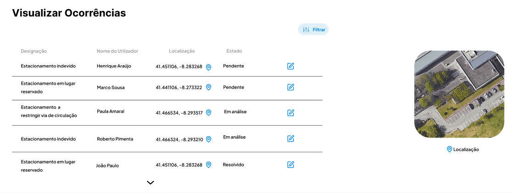

<div style="width: 1834px; height: 737px; position: relative; background: white; overflow: hidden;">

  
    <div data-platform="Desktop" data-state="Default" 
         style="width: 1847px; padding: 32px; left: -13px; top: 0px; position: absolute; background: white; 
                box-shadow: 0px 4px 4px rgba(0, 0, 0, 0.25); overflow: hidden; 
                border-bottom: 1px solid #D9D9D9; display: flex; flex-wrap: wrap; align-items: center; gap: 24px;">
    

 <!-- Inserir a imagem no topo esquerdo -->
 <div style="position: absolute; left: 30px; top: 25px;">
  
  </div>


      <div data-direction="Row" style="flex: 1 1 0; display: flex; flex-wrap: wrap; align-items: flex-start; gap: 8px; justify-content: flex-end;">
        <div data-state="Default" style="padding: 8px; border-radius: 8px; display: flex; justify-content: center; align-items: center; gap: 8px;"></div>
        
        <!-- Retângulo azul com fundo azul claro ao redor de "Visualizar Ocorrências" -->
        <div data-state="Default" style="padding: 8px; border-radius: 8px; display: flex; justify-content: center; align-items: center; gap: 8px; border: 2px solid rgb(189, 189, 254); background-color: #ADD8E6;">
          <div style="display: flex; flex-direction: column; color: #1E1E1E; font-size: 16px; font-family: Inter; font-weight: 400; line-height: 16px; word-wrap: break-word;">
            Visualizar Ocorrências
          </div>
        </div>
        
        <div data-state="Default" style="padding: 8px; border-radius: 8px; display: flex; justify-content: center; align-items: center; gap: 8px;">
          <div style="display: flex; flex-direction: column; color: #1E1E1E; font-size: 16px; font-family: Inter; font-weight: 400; line-height: 16px; word-wrap: break-word;">
            Tipos de Ocorrências
          </div>
        </div>
        
        <div data-state="Default" style="padding: 8px; border-radius: 8px; display: flex; justify-content: center; align-items: center; gap: 8px;">
          <div style="display: flex; flex-direction: column; color: #1E1E1E; font-size: 16px; font-family: Inter; font-weight: 400; line-height: 16px; word-wrap: break-word;">
            Submeter Ocorrência
          </div>
        </div>
        
        <div data-state="Default" style="padding: 8px; border-radius: 8px; display: flex; justify-content: center; align-items: center; gap: 8px;">
          <div style="display: flex; flex-direction: column; color: #1E1E1E; font-size: 16px; font-family: Inter; font-weight: 400; line-height: 16px; word-wrap: break-word;">
            Indicadores
          </div>
        </div>
        
        <div data-state="Default" style="padding: 8px; border-radius: 8px; display: flex; justify-content: center; align-items: center; gap: 8px;"></div>
      </div>
      
      <div data-state="Logged Out" style="width: 178px; display: flex; align-items: center; gap: 12px;">
          <div data-size="Small" data-state="Default" data-variant="Neutral" 
               style="flex: 1 1 0; padding: 8px; background: #E3E3E3; border-radius: 8px; 
                      outline: 1px solid #767676; outline-offset: -1px; display: flex; justify-content: center; align-items: center; gap: 8px; margin-left: -8px;">
              <div style="color: #1E1E1E; font-size: 16px; font-family: Inter; font-weight: 400; line-height: 16px; word-wrap: break-word;">
                  Login
              </div>
          </div>
      </div>
    </div>
  
    <!-- Imagem abaixo da linha cinza -->
    <div style="position: absolute; left: 20px; bottom: -38px;">
      
    </div>
  </div>
  